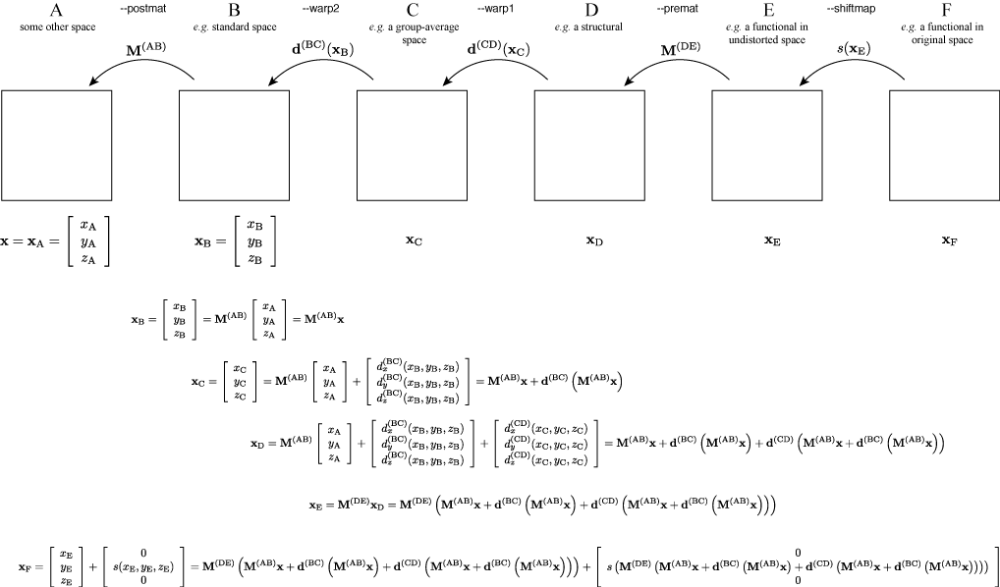

Tools for handling warps
|

|
Contents
Introduction
These are a set of command line utilities for handling, applying and transforming warp-fields created with fnirt, or any other application that produces warp-fields with a compatible format. Using these tools you can take the coefficient-field (the output for the --cout argument of fnirt) and create any other fnirt output. Hence, it is often a good idea to just specify the --cout for fnirt, thereby saving space, and then create the oter files of/when they are needed.
The output of the --cout parameter of fnirt is a 4D-file with three (for the x-, y- and z-directions) volumes of coefficients for quadratic/cubic splines. To go from a volume of coefficients to a displacement field each of the coefficients are multiplied with a 3D spline with a unique location within the displacement volume. Hence, the field is uniquely defined given the information in the coefficient-file. All (I think) the FSL applications that uses warp-fields have been written so that they accept either a coefficient-file or a field-file, which means that the average user does not really need to know exactly what format his/her warps are in.
fnirtfileutils
This utility is used to convert field->coefficients, coefficients->field, coefficients->other_coefficients etc. Probably the easiest is to look at some examples.
fnirtfileutils --in=my_fnirtcoefs --ref=my_refvol --out=my_field
This command simply converts a coefficient-file into a field-file (with the affine transform NOT included). This can be used e.g. for visualization purposes.
fnirtfileutils --in=my_fnirtcoefs --ref=my_refvol --jac=my_jac
This command calculates a map of Jacobian determinants (reflecting expansions/contractions) given a coefficient/field-file. This can be used e.g. for "Jacobian modulation" in FSL-VBM, or for visualization. If combined with the --withaff flag the jacobian associated with the affine transform will also be included in the output.
fnirtfileutils --in=my_fnirtcoefs --ref=my_refvol --out=my_field --withaff
This command will create a warp-field with the affine transform included as part of the field. This can be useful when one wants to use software that cannot decode the FSL coefficient-file format.
fnirtfileutils --in=some_field --ref=some_refvol --out=my_splinecoeffs --outformat=spline --warpres=10
This command will take a displacement-field created e.g. by some non-FSL application and convert it to a fnirt/FSL coefficient file with a spline knot-spacing of 10mm. Note that it may not be possible to represent the field exactly as a combination of splines with a knot-spacing greater than one voxel, so it will be projected onto the closest (in a least-squares sense) field that is possible to represent.
List of parameters
- --in=filname
- Name of file containing coefficients/field that specifies a set of warps. E.g. the output of the --cout parameter of fnirt.
- --ref=filname
- Name of target file for the warps. This typically the same file that was specified as --ref in fnirt.
- --out=filename
- Name of output file. The format of the output depends on what other parameters are set. The default format is a (4D) field-file. If the --outformat is set to spline the format will be a (4D) file of spline coefficients.
- --outformat=field/spline
- Specifies the output format. If set to field (default) the output will be a (4D) field-file. If set to spline the format will be a (4D) file of spline coefficients.
- --warpres=xres,yres,zres
- Specifes the resolution/knot-spacing of the splines pertaining to the coefficients in the --out file. This parameter is only relevant if --outformat is set to spline. It should be noted that if the --in file has a higher resolution, the resulting coefficents will pertain to the closest (in a least-squares sense) file in the space of fields with the --warpres resolution. It should also be noted that the resolution will always be an integer multiple of the voxel size.
- --knotspace=xksp,yksp,zksp
- Alternative (to --warpres) specifikation of the resolution of the output spline-field.
- --jac=filename
- Specifies that a (3D) file of Jacobian determinants corresponding to --in should be produced and written to filename.
- --withaff
- Specifies that the affine transform (i.e. that which was specified for the --aff parameter in fnirt) should be included as displacements in the --out file. That can be useful for interfacing with software that cannot decode FSL/fnirt coefficient-files (where the affine transform is stored separately from the displacements).
- --verbose
- Prompts fnirtfileutils to write additional information to the screen while processing. If you want to report a problem it is a good idea to turn this on and include the output in your report/mail.
applywarp
applywarp is used to apply the warps estimated by fnirt (or some other software) to some image. Say e.g. that you have run fnirt with the command
fnirt --ref=my_standard_space --in=my_struct --aff=my_aff --config=my_config_file --cout=my_coefficients
and now you want to apply the warps to my_struct. You would then use the command
applywarp --ref=my_standard_space --in=my_struct --warp=my_coefficients --out=my_warped_struct
Let us now say that the whole point of running fnirt in the first place was so to warp your functional data into standard space. You will then have previously have run flirt with a command like
flirt -ref my_struct -in my_func -omat func2struct.mat -dof 6
to align your functional data (my_func) with the structural scan (my_struct) uing a rigid-body transform (dof 6). You can now resample your functional data straight to standard space with a single operation given by
applywarp --ref=my_standard_space --in=my_func --out=my_func_in_my_standard_space --warp=my_coefficients --premat=func2struct.mat
Let us further say that maybe you are not altogether happy with my_standard_space. It could e.g. be the MNI-space, which as we know is not identical to Talairach. Let us further say that you have (don't ask me how) an affine transform (MNI_2_Tal.mat) that maps the MNI space to something that is a better approximation of the Talairach space. You can then transform your data straight into "your Talairach space" with the command
applywarp --ref=my_Tal_space --in=my_func --out=my_func_in_Tal_Space --warp=my_coefficients --premat=func2struct.mat --postmat=MNI_2_Tal.mat
The final point to mention is interpolation. The default interpolation method is tri-linear, which is mostly sufficient and what we want to do. There are times though when it is better to use "nearest neighbour" interpolation, which means "set the intensity in the output voxel to the same value as the closest (after the mapping) voxel in the input volume". An advantage of nearest-neighbour interpolation is that it does't create any "new" intensity values. Let us say e.g. that we have a file of ROI's, where each ROI is characterized by a given intensity value. If we e.g. have three ROI's the voxels in the ROI-volume would take the values 0, 1, 2 or 3. Let us say that these ROI's have been defined in MNI-space, and that we now want to map them into a subjects native space. If we were then to use the command
applywarp --ref=my_native_space --in=ROIs_in_MNI_space --warp=native_2_MNI_coefficients --out=ROIs_in_native_space
the output would contain interpolated non-integer values along the edges of the ROI's. If one instead uses
applywarp --ref=my_native_space --in=ROIs_in_MNI_space --warp=native_2_MNI_coefficients --out=ROIs_in_native_space --interp=nn
the output will contain only the original values 0, 1, 2 or 3 and all the ROI's would contain only relevant values.
List of parameters
- --in=filname
- Name of file to which the warps should be applied.
- --ref=filname
- Name of a file in target space. This typically the same file that was specified as --ref in fnirt.
- --warp=filname
- Name of a file with warp coefficients/fields. This typically the output given by the --cout parameter of fnirt.
- --out=filename
- Name of output file, i.e. the --in file warped into the space of the --ref file.
- --abs
- If set it indicates that the warps in --warp should be interpreted as absolute. I.e. the values in --warp are the coordinates in the --ref space, rather than displacements. This flag is ignored if --warp was created by fnirt, which always creates relative displacements.
- --rel
- If set it indicates that the warps in --warp should be interpreted as relative. I.e. the values in --warp are displacements from the coordinates in the --ref space.
- --datatype=char/short/int/float/double
- Forces the data type in --out to be that given by the argument. If it is not set the data type in --out will be the same as in --in.
- --super
- Indicates that an intermediary sampling level should be used. This is relevant primarily when using nearest-neighbour interpolation from an --in with higher resolution than given by --ref. It is e.g. used in TBSS when projecting the skeleton from the (high resolution) template back to native space. If it was not used the back-projected skeleton may no longer be continous.
- --superlevel=# or --superlevel=a
- Specifies the level of super-sampling (relative the --ref volume) for the intermediary sampling step. If set to superlevel=a the supersampling will be adjusted so that the intermediary step has at least the resolution of the --in file in all directions. It will be ignored if --super isn't set.
- --premat=filename
- Specifies an affine transform that should be applied to the data prior to the non-linear warping.
- --postmat=filename
- Specifies an affine transform that should be applied to the data following to the non-linear warping.
- --mask=filename
- Specifies a volume (in the space of --ref) that should be multiplied with the --out file.
- --interp=nn/trilinear/sinc
- Specifies which interpolation model to use when resampling --in. The default is trilinear, which is mostly sufficient.
- --verbose
- Prompts applywarp to write additional information to the screen while processing. If you want to report a problem it is a good idea to turn this on and include the output in your report/mail.
invwarp
invwarp is used to "reverse" a non-linear mapping, much in the same way as one would use
convert_xfm -omat B2A.mat -inverse A2B.mat
to "reverse" a linear mapping. It can e.g. be useful if one wants to use a set of ROI's that have been specified once and for all in standard space by projecting them into the space of individual subjects. Let us e.g. say that we have run fnirt with
fnirt --ref=MNI152_T1_2mm --in=my_struct --aff=my_aff --cout=warps_into_MNI_space --config=T1_2_MNI152_2mm
and that we have a ROI in MNI-space, in the binary file ACC_left.nii.gz, that we would like to apply to my_struct in its native space. We can then use invwarp to reverse the my_struct->MNI mapping with the command
invwarp --ref=my_struct --warp=warps_into_MNI_space --out=warps_into_my_struct_space
and we can then use that mapping to warp the ROI into the subjects native space with
applywarp --ref=my_struct --in=ACC_left --warp=warps_into_my_struct_space --out=ACC_left_in_my_struct_space --interp=nn
It should be noted that invwarp is quite computationally intensive, and may take quite long to run. To reduce execution time it may e.g. be a good idea to crop my_struct (before any of the processing steps) so that the FOV is reasonably "tight". If you look at the MNI templates you can get an idea of what a suitable "tightness" is.
List of parameters
- --warp=filname
- Name of file containing warp-coefficients/fields. This would typically be the output from the --cout switch of fnirt (but can also use fields, like the output from --fout).
- --ref=filname
- Name of a file in target space. Note that the target space is now different from the target space that was used to create the --warp file. It would typically be the file that was specified with the --in argument when running fnirt.
- --out=filename
- Name of output file, containing warps that are the "reverse" of those in --warp. This will be a field-file (rather than a file of spline coefficients), and it will have any affine component included as part of the displacements.
- --abs
- If set it indicates that the warps in --warp should be interpreted as absolute, provided that it is not created by fnirt (which always uses relative warps). If set it also indicates that the output --out should be absolute.
- --rel
- If set it indicates that the warps in --warp should be interpreted as relative. I.e. the values in --warp are displacements from the coordinates in the --ref space. If set it also indicates that the output --out should be relative.
- --niter=#
- Determines how many iterations of the gradient-descent search that should be run.
- --regularise
- Regularisation strength (deafult=1.0).
- --noconstraint
- Do not apply Jacobian constraint
- --jmin=val
- Minimum acceptable Jacobian value for constraint (default 0.01)
- --jmax=val
- Maximum acceptable Jacobian value for constraint (default 100.0)
- --verbose
- Prompts invwarp to write additional information to the screen while processing. If you want to report a problem it is a good idea to turn this on and include the output in your report/mail.
convertwarp
convertwarp is a general tool for combining multiple transforms into one. In its most general form it allows one to specify a transform of the form

where d(CD) and d(BC) corresponds to the arguments to --warp1 and --warp2 respectively and where s corresponds to --shiftmap (which has been applied in the y-direction in this example). M(DE) and M(AB) correspond to the inverses of the arguments to --premat and --postmat respectively. In the equation above xF corresponds to the output provided the --absout flag has been set. If not, or if the --relout flag has been set, the original coordinates ([xA yA zA]T above) has been subtracted away.
It is probably not for the faint of heart, but for others it might be useful. Say e.g. that we have some functional data func.nii.gz for which we have a fieldmap that has been pre-processed into a "shiftmap" (see fugue manual) that we have called shiftmap.nii.gz. Let us also assume that we have a structural scan called struct.nii.gz and that we have run
flirt -ref struct -in func -omat func2struct.mat
fnirt --ref=MNI152_T1_2mm --in=struct --aff=Aff_MNI2struct --config=T1_2_MNI152_2mm --cout=Nonlin_MNI2struct
We can then create a single transform that maps the functional scan into the MNI-space with the command
convertwarp --ref=MNI152_T1_2mm --warp1=Nonlin_MNI2struct --shiftmap=shiftmap --shiftdir=y --premat=func2struct.mat --out=my_comprehensive_warps --relout
which we can then use to transform func.nii.gz into the MNI-space with the command
applywarp --ref=MNI152_T1_2mm --in=func --warp=my_comprehensive_warps --rel --out=func_in_MNI_space
List of parameters
- --ref=filname
- Name of a file in target space of the full transform.
- --out=filename
- Name of output file, containing warps that are the combination of all those given as arguments. The format of this will be a field-file (rather than spline coefficients) with any affine components included.
- --premat=filename
- Name of file containing affine transform corresponding e.g. to a rigid-body transform of a subjects functional scan to his/her structural.
- --warp1=filename
- Name of file containing warp-fields/coefficients. This could e.g. be a fnirt-transform from a subjects structural scan to an average of a group of subjects.
- --warp2=filename
- Name of file containing warp-fields/coefficients. This could e.g. be a fnirt-transform from the average of a group of subjects to some standard space (e.g. MNI152).
- --postmat=filename
- Name of file containing an affine transform. It could e.g. be an affine transform that maps the MNI152-space into a better approximation to the Talairach-space (if indeed there is one).
- --shiftmap=filename
- Name of file containing a "shiftmap", a non-linear transform with displacements only in one direction. This would typically be a fieldmap that has been pre-processed using fugue that maps a subjects functional (EPI) data onto an undistorted space (i.e. a space that corresponds to his/her true anatomy).
- --shiftdir=x/y/z/-x/-y/-z
- Indicates the direction that the distortions from --shiftmap goes. It depends on the direction and polarity of the phase-encoding in the EPI sequence.
- --jstats
- Print out statistics of the Jacobian of the warpfield.
- --constrainj
- Constrain the Jacobian of the warpfield to lie within specified min/max limits.
- --jmin=value
- Minimum acceptable Jacobian value for constraint (default 0.01).
- --jmax=value
- Maximum acceptable Jacobian value for constraint (default 100.0).
- --abs
- If set it indicates that the warps in --warp1 and --warp2 should be interpreted as absolute. I.e. the values in --warp1/2 are the coordinates in the next space, rather than displacements. This flag is ignored if --warp1/2 was created by fnirt, which always creates relative displacements.
- --rel
- If set it indicates that the warps in --warp1/2 should be interpreted as relative. I.e. the values in --warp1/2 are displacements from the coordinates in the next space.
- --absout
- If set it indicates that the warps in --out should be absolute, i.e. the vaulues in --out are the coordinates in --ref, rather than displacements.
- --relout
- If set it indicates that the warps in --out should be relative, i.e. the vaulues in --out are displacements from the coordinates in --ref.
- --verbose
- Prompts convertwarp to write additional information to the screen while processing. If you want to report a problem it is a good idea to turn this on and include the output in your report/mail.
Copyright © 2007, University of Oxford. Jesper Andersson and Mark Jenkinson.